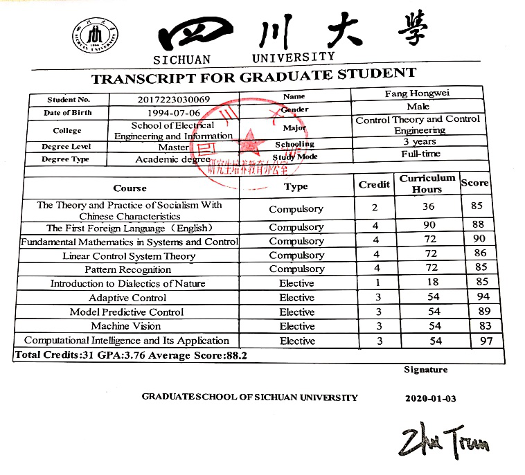
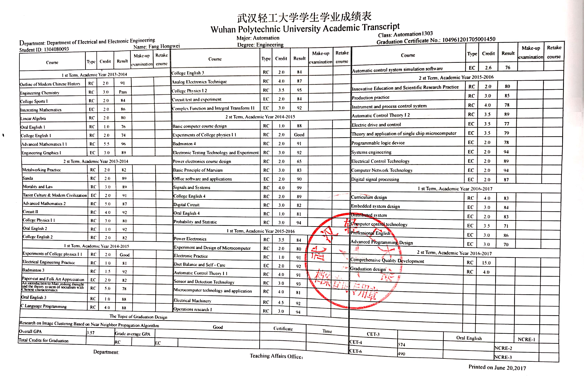

|
Fang Hongwei
Phone: +86-17671253091
Email: weihongfang528@163.com
Address: Sichuan University, College of Electrical Engineering, Chengdu, Sichuan, China
Birthday: 1994/7 | Gender: Male
|
|
|
EDUCATION
Wuhan Polytechnical University
2013.09~2017.07
GPA: 3.57/4.0;
Awards: Outstanding Graduate in Wuhan Polytechnical University (2017); Outstanding student and class leader in Wuhan Polytechnical University (2013~2016)
Sichuan University
2017.09~2020.06
M.S Control theory and Control Engineering
GPA：3.76/4.0; Integrated Ranking: 1/8
Awards: Outstanding student in Sichuan University (2019); The Second Prize Scholarship (2017~2019).
Research direction: Machine learning, Intelligent robot control, Approximate dynamic programming.
RESEARCH EXPERIENCE
Intelligent Detection of ECG signals
2018.01 - 2018.07
Project Description
- ECG signals often show the physiological characteristics of patients, different types of ECG signals represent different diseases, so accurate identification of ECG signals can help doctors diagnose patients.
Main Responsibility
- Proposed a classification algorithm based on three-domain features extraction, common types of heart rate can be detected by this algorithm.
Video Inspection Robot for Steam Generator
2019.01 - 2019.07
Project Description
- In order to observe the blockage of plum blossom holes in the evaporator, the video inspection robot is designed to move automatically on the steam generator. The robot consists of three major components: continuum manipulator, magnetic wheel mobile robot and RGB-D camera. The RGB-D camera, connected with continuum manipulator, can collect video information when magnetic wheel mobile vehicle shuttles between heat transfer tubes.
Main Responsibility
- Finished modeling the mathematic model and designing the improved dual-heuristic dynamic programming control scheme for magnetic wheel mobile vehicle.
- Collected hundreds of data samples and designed a foreign body detection algorithm for the steam generator.
INTERNSHIP
Sichuan Lucky Electric Technology CO., LTD.
2018.07 –2019.07
Sichuan lucky electric technology co., ltd. is the off-campus location of our laboratory, where I mainly undertake the tasks of project pre-research, application and algorithm research and development. I helped our team apply for a national key R & D project.
RESEARCH PUBLICATION
- Fang H W，Dian S Y. Research on Intelligent Detection Technology for Bundle Branch Conduction Block[C]. Materials Science and Engineering, 428 (2018): 012034.
- Fang H W, ZhaoT, Dian S Y. Research on intelligent classification of ECG signals based on three-domain features extraction and GS-SVM[J]. J Sichuan Univ: Nat Sci Ed. (In Chinese)
- Fang H W, ZhaoT, Dian S Y. Research on intelligent classification of ECG signals based on three-domain features extraction and GS-SVM[J]. J Sichuan Univ: Nat Sci Ed. (In Chinese)
ACADEMIC TRANSCRIPT
- Sichuan University

- Wuhan Polytechnic University
